Fraud treated as a financial-risk problem: estimate the probability that each card transaction is fraudulent when only 0.17% are, and turn that probability into decisions (approve, review, block) that balance fraud losses against the cost of rejecting good customers. XGBoost on RFM, temporal and velocity features with fold-local SMOTE and stratified 5-fold validation reaches 0.914 PR-AUC and 0.82 recall at a 1% false-positive rate; SHAP explains decisions, UMAP segments risk, and the Population Stability Index monitors drift, with 87% test coverage and GitHub Actions CI. This is the quant and risk edition. Everything you need for a 30–45 minute interview.
Resume bullets this booklet defends
The one-line version. A risk model that prices each transaction's fraud probability and a decision policy that converts it into the action with the lowest expected cost, monitored so the risk estimate stays trustworthy as conditions change.
Start with an example. Two transactions both score a 5% fraud probability. One is a 20,000 purchase, the other a 300 purchase. If approved, the expected fraud loss is for the first and for the second. If blocked, each costs roughly the same: an annoyed customer, a support call, perhaps a lost sale, say 150 (ILLUSTRATIVE). The rational decisions differ: block (or review) the large one, approve the small one. The same score leads to different actions because the stakes differ. That is the core of this edition: a fraud score is an input to a financial decision, and a model with an excellent PR-AUC can still produce bad decisions if the threshold ignores costs, capacity or calibration.
The problem it solves. Fraud is a direct financial loss (chargebacks, written-off amounts), an operational cost (analyst reviews, disputes) and a customer-experience risk (false declines push good customers away). The modelling problem is rare-event estimation under extreme imbalance; the decision problem is choosing thresholds that minimise total expected cost under operational constraints; the governance problem is keeping the model valid, explainable and stable over time.
Who would use it. Fraud-risk managers setting decline and review policies, operations teams sizing analyst capacity, model-risk and validation teams, and quants building the scoring model.
Inputs and outputs. Inputs: transactions (time, amount, other attributes) with fraud labels for training. Outputs: a fraud probability per transaction, a decision tier at chosen thresholds, SHAP reasons per decision, UMAP risk segments, PSI stability reports.
What makes it technically interesting. Base-rate effects on precision; cost-sensitive decision theory; calibration (probabilities, not just rankings, matter for expected loss); temporal leakage and validation design; and monitoring under drift and adversarial adaptation.
"I framed fraud detection as a risk-decision problem. On 284K card transactions with only 0.17% fraud, I built an XGBoost model on behavioural features: recency, frequency and monetary value, time of day, and transaction velocity. I applied SMOTE only within training folds of a stratified 5-fold cross-validation to avoid leakage, and tuned with Optuna. The model reached 0.914 PR-AUC and 82% recall at a 1% false-positive rate. But a score isn't a decision, so the important part was the threshold: choosing it from the cost of a missed fraud versus the cost of declining a good customer, within analyst capacity. Around that I built SHAP explanations for each decision, UMAP risk segmentation and PSI drift monitoring, with 87% test coverage and GitHub Actions CI, so the model can be validated and monitored like any other risk model."
Scope boundary. Offline risk model, decision-threshold analysis and monitoring tooling. Not a live authorisation system, and it does not set real business costs, which must come from the fraud operation.
No code, notebooks or MLflow runs for this project are in the Resume Prep folder, so every resume number is marked UNVERIFIED: your reported result, with the evidence needed to defend it. Numbers in worked examples, including all costs, are ILLUSTRATIVE. Items marked [confirm] are standard choices assumed to explain the bullets.
Confirm before interviewing. (1) Dataset: 284K transactions at 0.17% matches the public ULB / Kaggle credit-card dataset (284,807 transactions, 492 frauds, two days, anonymised PCA features plus Time and Amount). It has no card ID (so per-card RFM and velocity need explaining) and covers two days (so drift and out-of-time validation are limited). (2) Consistency of the headline numbers: if recall were 0.82 at exactly 1% FPR on a 0.17%-prevalence test set, PR-AUC could not exceed about 0.85 (proof in 3.3). Know whether 82% is reached at a lower FPR, comes from a different split, or whether PR-AUC was computed on rebalanced data (invalid). (3) Whether cost-based thresholds used real or assumed costs. (4) What "CD" deploys, if anything.
| Resume bullet | Concepts you must be able to explain |
|---|---|
| 1. 284K transactions, 0.17% prevalence, XGBoost, 0.914 PR-AUC, 0.82 recall at 1% FPR | Fraud as financial risk, rare events and base rates, precision/recall/FPR, PR-AUC, cost-sensitive decisions, thresholds, calibration |
| 2. RFM, temporal, velocity features; fold-local SMOTE; Optuna; stratified 5-fold CV | Behavioural risk features, temporal leakage, SMOTE and its effect on probabilities, XGBoost, validation design |
| 3. SHAP, UMAP, PSI drift monitoring, 87% coverage, GitHub Actions CI/CD | Explainability for decisions, risk segmentation, PSI and drift, model monitoring, model validation and controls |
n_neighbors and min_dist. Coloured by score or label, it reveals distinct fraud segments (possibly different attack types), high-risk legitimate segments (false-positive sources) and new regions appearing over time.
Step 1: Data and features. Order by time; build past-only RFM, temporal and velocity features; log-transform amounts. Reason: behavioural signals without leakage.
Step 2: Validation design. Stratified 5-fold CV with SMOTE inside each training fold (validation keeps 0.17% prevalence); ideally a final out-of-time hold-out. Reason: honest estimates under extreme imbalance.
Step 3: Model and tuning. XGBoost with Optuna maximising mean CV PR-AUC; logistic regression as challenger. Reason: strong ranking performance with a simpler benchmark for validation.
Step 4: Calibrate. Map out-of-fold scores to probabilities with Platt scaling, isotonic regression or prior correction; check reliability and Brier score. Reason: SMOTE inflates scores; decisions need true probabilities.
Step 5: Choose the decision policy. Using out-of-fold probabilities and amounts: block if expected loss exceeds friction cost by a margin; send a middle band to review up to analyst capacity; approve the rest; check the resulting FPR (target ≤ 1%), alert volume and expected cost. Reason: decisions that minimise total cost within operational limits.
Step 6: Explain. TreeSHAP reasons per flagged transaction; global SHAP for validation of drivers. Reason: analyst efficiency, auditability, customer communication.
Step 7: Monitor and control. Reference distributions stored; PSI on key features and the score; alert-rate tracking; lagged recall and precision on matured labels; pytest suite and GitHub Actions protect the pipeline. Reason: detect drift and keep the model valid.
The model output is a probability; the action depends on costs and constraints. A three-tier policy is common:
| Tier | Rule (ILLUSTRATIVE) | Cost if wrong | Constraint |
|---|---|---|---|
| Block | and high | Good customer declined | Decline-rate limit |
| Review | Middle band, ranked by expected loss | Analyst time; delay | Reviews per day |
| Approve | Expected loss below friction cost | Fraud loss | Loss budget |
Ranking the review queue by expected loss () rather than by alone uses limited analyst capacity on the transactions where a correct decision saves the most money.
| Claim | What it means and how it is computed | Baseline and what could mislead | Status |
|---|---|---|---|
| 284K, 0.17% | ≈ 284,807 transactions, ≈ 492 frauds | Two days, no card ID if ULB | UNVERIFIED; confirm source |
| 0.914 PR-AUC | Average precision of out-of-fold scores | Random 0.0017; tuned on same folds | UNVERIFIED |
| 0.82 recall at 1% FPR | Share of frauds caught when 1% of legitimate are flagged | Precision there ≈ 12%; see check | UNVERIFIED |
| 87% coverage | Lines executed in pytest | Coverage ≠ correctness | UNVERIFIED |
Consistency of the two headline numbers. If recall is 0.82 at exactly 1% FPR, every threshold catching more than 82% of frauds flags at least about 2,843 legitimate transactions, so precision beyond that recall is at most . Average precision is then at most . Either 82% recall is reached at a much lower FPR (state "at ≤ 1% FPR"), the numbers come from different evaluations, or PR-AUC was computed on oversampled data, which would be invalid. Check before the interview.
1. Separate probability estimation from the decision rule. Why: costs, capacity and policy change more often than fraud patterns; a calibrated probability can be re-thresholded without retraining. Alternative: cost-weighted training with a fixed 0.5 cut. Trade-off: requires calibration and an explicit cost model.
2. Cost-based (and amount-aware) thresholds instead of a single fixed cut. Why: the same probability means very different expected loss for different amounts. Alternative: one global threshold set by FPR. Trade-off: needs credible cost estimates; more complex policy to explain and govern.
3. PR-AUC and recall at fixed FPR instead of accuracy or ROC-AUC. Why: base-rate effects make accuracy useless and ROC-AUC flattering; the operating point reflects customer friction. Alternative: accuracy, ROC-AUC. Trade-off: PR-AUC depends on prevalence and is not comparable across portfolios.
4. Fold-local SMOTE plus recalibration instead of global SMOTE. Why: prevents leakage and keeps evaluation at true prevalence; recalibration undoes SMOTE's probability inflation. Alternative: class weights or no resampling. Trade-off: extra calibration step; class weights may perform as well and are simpler.
5. SHAP explanations as part of the decision output. Why: explainable declines are required for analysts, disputes and audit; global SHAP supports validation. Alternative: feature-importance plots only. Trade-off: compute cost; explanations are about the model, not causes.
6. PSI monitoring plus lagged performance instead of waiting for labels. Why: labels arrive weeks later; PSI and alert-rate tracking give early warning. Alternative: periodic retraining on a schedule only. Trade-off: PSI catches data drift, not concept drift.
"I treated fraud detection as a risk-decision problem. The data were 284K card transactions with 0.17% fraud. At that base rate, even a 1% false-positive rate means most alerts are false, so the question isn't only how well the model ranks, but how to act on its scores.
The model is XGBoost on behavioural features: recency, frequency and amount relative to recent behaviour, time of day, and transaction velocity, all computed from past data only. I used stratified 5-fold cross-validation with SMOTE applied inside each training fold, and Optuna for tuning. It reached 0.914 PR-AUC and 82% recall at a 1% false-positive rate.
Then the decision layer: flag a transaction when the expected fraud loss, probability times amount, exceeds the cost of disturbing a good customer, with a review tier sized to analyst capacity. That requires calibrated probabilities, because SMOTE inflates scores. Finally, SHAP explains each decision, UMAP segments risk, and PSI monitors drift, with tests and CI as controls."
"The risk. Fraud loss is the stolen amount net of recoveries; false declines cost friction and customers; reviews cost analyst time. The aim is to minimise the total.
Base rates. With 0.17% prevalence, precision equals recall times prevalence over that plus FPR times one minus prevalence. At 82% recall and 1% FPR, precision is only about 12%. That's why accuracy is meaningless and why I report PR-AUC, whose random baseline is 0.0017, and recall at a fixed FPR, which corresponds to a customer-friction budget.
Model and validation. Features describe behaviour: velocity, amount relative to recent spending, timing. Windows end strictly before each transaction. SMOTE is applied only inside training folds so validation keeps true prevalence and no synthetic copies of validation frauds leak into training. XGBoost was tuned with Optuna on mean CV PR-AUC.
From score to decision. Flag when p times the loss if fraud exceeds one minus p times the false-positive cost. The threshold is C_FP over C_FP plus C_FN, so for a 20,000 transaction with a 150 false-positive cost it's under 1%, but for a 500 transaction it's 23%. One global threshold is therefore suboptimal. These thresholds are probabilities, so the model must be calibrated; SMOTE distorts probabilities, so I recalibrate on out-of-fold data.
Why PR-AUC isn't enough. A model with 0.914 PR-AUC can still be deployed badly: a threshold that's too low floods analysts and declines good customers; too high lets large frauds through.
Explain and monitor. SHAP gives reasons for each alert and lets validators check the drivers make sense; UMAP shows risk segments; PSI on features and scores warns of drift before labels arrive. Tests at 87% coverage and GitHub Actions protect the leakage-sensitive code."
"I'll cover the decision theory, calibration, validation, monitoring and limitations.
Decision theory. For each transaction there are actions with costs. Approving a fraud loses the amount times loss-given-fraud; blocking a good customer costs friction; reviewing costs analyst time and is capacity-limited. The expected-cost rule gives an amount-dependent threshold. A practical policy has three tiers: block when expected loss is very high, review a middle band ranked by expected loss up to capacity, approve the rest. The result is checked against constraints: decline rate, FPR around 1%, review volume.
Calibration. Rankings drive PR-AUC; probabilities drive money. SMOTE changes the training prevalence, so raw scores are inflated. Platt scaling, isotonic regression, or a prior-correction formula fix this on held-out data with true prevalence. Calibration is monotone, so PR-AUC is unchanged, but decisions, loss forecasts and capacity planning become correct. I'd show a reliability diagram and Brier score.
Consistency of metrics. At 0.17% prevalence, 1% FPR is about 2,800 false alarms against about 400 frauds caught. If 82% recall really needed a full 1% FPR, average precision couldn't exceed about 0.85, so with 0.914 PR-AUC the 82% recall must be reached at a much lower FPR. Checking claims like that is part of validating a risk model.
Validation. Random stratified CV gives stable estimates with only about 98 frauds per fold, but fraud drifts, so the standard risk-model test is out-of-time: train on earlier, test on later. A logistic-regression challenger shows what complexity buys. Sensitivity analysis checks threshold stability and SHAP driver stability across folds. Tuning on the same folds as reporting is slightly optimistic; a hold-out fixes that.
Monitoring. PSI on the score matters operationally: if the score distribution shifts, a fixed threshold changes alert volume and decline rates even if the model is fine. Feature PSI localises the cause. Concept drift, fraudsters adapting, needs matured labels, so lagged recall and precision complete the picture. There's also a feedback loop: blocked transactions never get a true label, so a small random approval or review sample keeps estimates unbiased.
Limitations. If the data are the public ULB dataset: two days, anonymised PCA features, no card ID, which limits behavioural features and drift analysis. Costs were assumed, not observed. Next steps: out-of-time validation on longer data, amount-weighted metrics, real cost estimates, and a champion-challenger monitoring process."
It estimates the probability that each card transaction is fraudulent and turns that probability into the action with the lowest expected cost: approve, send to review, or block. The data are 284K transactions with 0.17% fraud. The model is XGBoost on behavioural features (recency, frequency and monetary value, time of day, velocity), trained with fold-local SMOTE and stratified 5-fold cross-validation and tuned with Optuna, reaching 0.914 PR-AUC and 82% recall at a 1% false-positive rate. The decision layer chooses thresholds by comparing expected fraud loss (probability times amount) with the cost of disturbing a good customer, within analyst capacity. SHAP explains each decision, UMAP segments risk, and PSI monitors drift. Tests at 87% coverage and GitHub Actions CI act as engineering controls. It is offline analysis and tooling, not a live authorisation system.
Because errors have unequal, money-denominated costs and the output drives decisions. A missed fraud costs roughly the transaction amount (minus recoveries); a false decline costs customer friction, lost margin and possibly the customer; a review costs analyst time, which is limited. Losses are heavy-tailed, so one large missed fraud can matter more than many small ones. A classifier that maximises a statistical metric does not automatically minimise this total cost. Risk management adds three layers: decision theory (thresholds from costs and capacity), calibration (probabilities you can price with), and governance (validation, explainability, monitoring, controls). It is the same structure as credit risk: a probability-of-default model is only useful together with exposure, loss given default and a policy for acting on it.
Three reasons. Base rates: precision equals TPR × prevalence divided by (TPR × prevalence + FPR × (1 − prevalence)). With 82% recall, 1% FPR and 0.17% prevalence, precision is about 12%: nine in ten alerts are false even though the false-positive rate sounds low. Training: the loss is dominated by legitimate transactions, so a model can minimise it by ignoring fraud; resampling or weighting is needed. Evaluation noise: with about 492 frauds in total, each CV fold has about 98, so metrics vary noticeably across folds and small differences between models may not be significant. Accuracy is useless: predicting "legitimate" always gives 99.83%. So the right metrics focus on the rare class (PR-AUC, recall at fixed FPR, precision), and results should be reported with their variability.
Recall is the share of frauds caught; weighted by amount, it is the share of fraud losses prevented, which is what finance cares about. False-positive rate is the share of legitimate transactions flagged: customer friction, declines and complaints. Precision is the share of alerts that are real fraud: analyst efficiency and alert fatigue. At full-dataset scale, 1% FPR means about 2,843 legitimate transactions flagged; with 82% recall about 403 frauds are caught, so analysts would see about eight false alerts for every real one. These three numbers move together as the threshold changes: lowering it raises recall but also FPR and alert volume. A risk manager typically fixes a friction budget (FPR or decline rate) and an analyst capacity, then maximises amount-weighted recall within them.
PR-AUC (average precision) summarises how well a model ranks frauds above legitimate transactions across all thresholds; its random baseline equals prevalence, 0.0017, so 0.914 is excellent ranking. But deployment uses one threshold, and outcomes depend on it. If the threshold is too low, the system flags thousands of good customers and floods analysts; if too high, it misses fraud, including large-value fraud. If scores are inflated by SMOTE and the default 0.5 cut is used, the operating point is essentially arbitrary. A single global threshold also ignores amounts: a 5% probability is negligible for a small purchase and serious for a large one. And PR-AUC says nothing about stability over time. So PR-AUC is a model-comparison metric; suitability requires a well-chosen, calibrated, cost-aware threshold and monitoring.
In three steps. First, convert the score into a calibrated probability , because SMOTE inflates raw scores. Second, compute the expected cost of each action: approving costs (amount times loss given fraud); blocking costs (friction and lost business on a good customer); reviewing costs analyst time and delay. Third, apply a tiered policy: block when expected fraud loss far exceeds the friction cost, review a middle band ranked by expected loss up to analyst capacity, approve the rest. Finally, check aggregate constraints: overall FPR (for example ≤ 1%), decline rate, review volume and expected loss. Thresholds are chosen on out-of-fold data with true prevalence and revisited when costs, capacity or score distributions change (PSI on the score helps here).
Suppose the model gives a calibrated probability that a transaction is fraud. If we approve it, the expected cost is , where is the loss from a missed fraud (about amount × loss given fraud). If we block it, the expected cost is , the cost of declining a legitimate customer. Block when , which rearranges to . With (ILLUSTRATIVE): a 20,000 transaction has a threshold of about 0.74%; a 500 transaction about 23%. Two lessons: the optimal threshold falls as the amount rises, so one global threshold is suboptimal; and the rule uses directly, so it only works with calibrated probabilities. Adding a review option creates a middle band, limited by capacity.
Every threshold trades fraud losses against customer friction. Blocking more aggressively prevents more fraud loss but declines more good transactions. Declines are expensive in ways that are easy to underestimate: lost sale margin, support calls, customers switching to another card, and reputational damage; for valuable customers a false decline can cost more than a small fraud. Blocking less aggressively improves experience but raises chargebacks and write-offs. Reviews sit in between, but analysts are limited, and slow reviews also frustrate customers. The optimum depends on costs that the fraud operation must provide (fraud amounts and recovery rates, friction costs, review costs) and on constraints (decline-rate targets, review capacity, regulatory expectations). My job as the modeller is to provide calibrated probabilities and the cost curves showing expected loss at each threshold, so the business can choose knowingly.
They measure deviation from normal behaviour, which is how most fraud reveals itself. Recency (time since the last transaction) and frequency (transactions in the last hour or day) capture unusual activity patterns. Monetary features compare the current amount with recent spending, flagging sudden large purchases. Temporal features (hour of day, night flag) capture unusual timing. Velocity measures how fast transactions or spend accumulate; in risk terms, it is the rate of loss accumulation: a compromised card is typically used many times quickly before it is blocked. These features generalise better than static attributes because they describe behaviour rather than specific merchants or amounts. All windows must end strictly before the current transaction. If the dataset has no card ID, I must explain exactly how these were computed [confirm].
Temporal leakage means using information at prediction time that would only be available later. In fraud it appears in three ways. Features that include the current or future transactions in a rolling window, so the model "sees" the burst it should predict; I used windows ending strictly before each transaction. Global statistics computed on the whole dataset (normalisation means, target encodings), which embed future information; these must be fitted on training data only. Validation design: random folds let the model train on transactions that occurred after the ones it is tested on, which overstates performance when patterns drift. Stratified random CV was used for stable model comparison; the stronger test for a risk model is out-of-time validation, training on earlier periods and testing on later ones [confirm whether you ran one]. Leakage understates risk, which is the worst failure for a risk model.
SMOTE creates synthetic fraud examples by interpolating between real frauds and their nearest fraud neighbours. If it is applied before cross-validation, synthetic points derived from validation frauds end up in training, so the model is tested on near-copies of what it learned, and validation folds may contain synthetic points, distorting prevalence. Fold-local SMOTE oversamples only the training part of each fold, so validation stays real data at 0.17% prevalence. The second effect matters for risk: SMOTE changes the training class balance, so the model's raw scores are inflated relative to true fraud probabilities. Rankings (and PR-AUC) are fine, but any decision that uses the probability itself, such as cost-based thresholds or expected-loss forecasts, needs recalibration on untouched data, using Platt scaling, isotonic regression or a prior-correction formula.
XGBoost is gradient-boosted decision trees: each tree corrects the errors of the ensemble so far, with shrinkage and regularisation. It captures non-linear interactions among amount, timing and velocity without manual feature crosses, handles skewed amounts and missing values, and is among the strongest methods for tabular risk data. Tuning used Optuna: each trial proposed hyperparameters (depth, learning rate, subsampling, regularisation, SMOTE ratio), ran stratified 5-fold CV with fold-local SMOTE and returned mean PR-AUC; the TPE sampler concentrated later trials in promising regions. Stratification guarantees about 98 frauds per fold. For validation quality, I would add a logistic-regression challenger, report fold-to-fold variability, and use nested CV or a hold-out, because reporting the best score from the same folds used for tuning is slightly optimistic [confirm].
SHAP attributes each prediction to features: the model's log-odds equals a base value plus one contribution per feature, computed exactly and quickly for XGBoost with TreeSHAP. For operations, each alert comes with reasons ("velocity in the last hour +2.1, amount 6× usual +1.4"), so analysts review faster and more consistently. For customers and disputes, it supports explaining why a transaction was declined. For model validation, global SHAP shows whether the drivers make economic sense; a suspicious dominant feature can reveal leakage. For monitoring, changes in SHAP importance over time can signal shifting fraud patterns. Caveats: SHAP explains the model, not the world; correlated features share credit in ways that depend on assumptions; and values are in log-odds, so they do not map linearly to probability.
UMAP projects high-dimensional transactions onto a 2D map that preserves local neighbourhoods, so similar transactions appear close together. Coloured by fraud label or predicted risk, it reveals segments: distinct clusters of fraud (possibly different attack types needing different rules), legitimate segments that score high (sources of false positives, where a segment-specific threshold or feature might help), and regions where fraud mixes with legitimate activity (inherently hard cases). Over time, new clusters appearing in recent data are a visual drift signal. It differs from SHAP: SHAP explains why the model scored one transaction; UMAP shows how the population is structured. Interpretation needs care: neighbourhoods are meaningful, but distances between clusters and cluster sizes are not, and layouts depend on parameters. It is an exploratory and communication tool, not evidence for performance claims.
The Population Stability Index compares the distribution of a variable now with a reference distribution, usually the development sample. Bin the reference into deciles, compute reference and current shares and , and sum . Below 0.1 is stable, 0.1–0.25 worth investigating, above 0.25 a significant shift. I computed it for key features and for the model score. Score PSI is operationally important: at a fixed threshold, a shifted score distribution changes alert volume and decline rates, affecting customers and analyst workload even before fraud performance visibly changes. Feature PSI localises the cause. PSI needs no labels, which matters because fraud labels arrive weeks later. Its limitation is that it detects data drift only; concept drift needs lagged performance on matured labels.
Model validation is independent assessment that a model is fit for purpose: conceptually sound, built on clean data without leakage, performing out of sample and over time, benchmarked against simpler alternatives, stable under sensitivity tests, documented with its assumptions and limitations, and monitored after deployment. Banking supervisors formalise this as model-risk management. My project provides evidence for several elements: stratified CV with fold-local SMOTE, metrics suited to rare events, SHAP for conceptual soundness, PSI for monitoring. Engineering controls support reliability: pytest tests on the leakage-prone logic (feature windows, resampling inside folds, metric and PSI functions) with 87% line coverage, GitHub Actions running them on every change, and MLflow for reproducibility. Gaps a validator would raise: out-of-time testing, calibration evidence, real cost inputs and the dataset's limitations [confirm].
Calibration means predicted probabilities match observed frequencies: among transactions scored at 5%, about 5% are fraud. Ranking metrics like PR-AUC ignore calibration, but risk decisions use the probability itself: the cost threshold , expected-loss ranking of the review queue, fraud-loss forecasts and capacity planning. SMOTE inflates scores because the training prevalence is artificial, so an uncalibrated model would block far too much. Methods, fitted on out-of-fold predictions with true prevalence: Platt scaling (a logistic regression of label on score, two parameters, robust with few positives); isotonic regression (non-parametric and monotone, flexible but can overfit with about 490 positives); or the prior-correction formula, which adjusts odds by the ratio of true to training prevalence. Evaluate with reliability diagrams and the Brier score. Calibration must be rechecked under drift.
This check belongs in validating any risk model. Use full-dataset counts: about 492 frauds and 284,315 legitimate transactions. If recall is 0.82 at exactly 1% FPR, any threshold catching more than 82% of frauds flags at least about 2,843 legitimate transactions, so precision at those recall levels is at most . Average precision is then at most about , below the claimed 0.914. So the two claims cannot both be exact on the same evaluation. Plausible explanations: 82% recall is reached at a much lower FPR (an AP of 0.914 suggests precision near 0.9 there, an FPR of roughly 0.02%), making "1% FPR" a loose bound; the numbers come from different splits; or PR-AUC was computed on rebalanced data, which would be invalid. I would check and state the precise version.
Capacity turns threshold selection into a ranking-and-cutoff problem. Suppose analysts can review transactions per day. First, the block tier: transactions whose expected fraud loss is so high relative to friction cost that blocking without review is justified. Second, the review tier: rank remaining transactions by expected loss saved by review, roughly minus review cost, and send the top to analysts. Ranking by expected loss rather than by probability alone focuses limited capacity on transactions where a correct decision saves the most money; a 3% probability on a large transaction can outrank a 30% probability on a tiny one. Third, approve the rest. Then check the implied FPR, decline rate and expected residual loss. When volume or score distributions shift (score PSI), the cutoff that fills capacity changes and must be recomputed.
Amount-dependent decisions are better in expected-cost terms. The cost-optimal rule flags when with , so the threshold falls as the amount rises: under 1% for a 20,000 transaction and over 20% for a 500 one with a friction cost of 150 (ILLUSTRATIVE). A global threshold over-blocks small transactions (high friction, little loss prevented) and under-blocks large ones. Practical considerations: costs should be estimated per segment (high-value customers may have higher friction costs); very small transactions might be approved outright; and policies must stay explainable and consistent for customers and regulators. Equivalent formulations rank by expected loss and cut at a level set by capacity or a loss budget. All of this requires calibrated probabilities and should be evaluated with amount-weighted recall alongside count recall.
With out-of-time evidence and monitoring. Validation: train on an earlier period and test on successive later periods, tracking PR-AUC, recall at the chosen operating point, calibration and amount-weighted recall per period; a stable model degrades slowly and smoothly. Check stability of inputs and drivers too: feature PSI and score PSI between periods, and whether SHAP importance rankings stay similar. Threshold stability matters operationally: if the threshold that achieves 1% FPR moves a lot from week to week, alert volumes will swing. In production: monthly PSI reports, alert-rate dashboards, lagged performance on matured labels, and a champion-challenger setup where a retrained model runs in shadow before replacing the current one. A limitation in my project is that the public dataset, if used, covers only two days, so genuine over-time stability could not be measured [confirm].
Adaptation creates concept drift: the relationship between features and fraud changes because adversaries change tactics in response to the model. Patterns that were caught become rarer and new ones appear, so performance decays even if input distributions look stable. Responses: monitoring of lagged recall and precision on matured labels (concept drift is invisible to PSI alone), analyst feedback on missed fraud, and UMAP or anomaly scores to spot new clusters; faster retraining on recent data with time-weighting; robust features that are costly for fraudsters to change, such as velocity relative to the card's own history; layered defences: rules for newly discovered patterns until retraining, plus unsupervised anomaly detection for things the supervised model has never seen; and less transparency to attackers, since publishing exact thresholds or reasons invites probing.
It creates selection bias in the training data, a feedback loop. Once a model is deployed, transactions it blocks are never completed, so we never learn whether they were really fraud. Future training data contain labels mainly for approved transactions, which under-represent the high-risk region. Retraining on that data can make the model forget patterns it currently blocks, or misjudge how many blocked transactions were actually legitimate (true false-positive cost). Mitigations: label reviewed transactions through analyst outcomes; approve a small random sample of would-be-blocked low-amount transactions, or route them to review, as exploration to obtain unbiased labels; use reject-inference techniques similar to those in credit scoring; and track a holdout population scored but not acted on, where regulation and risk appetite allow. It is a standard issue in credit risk and applies equally to fraud.
It depends on the source, and I should be explicit [confirm]. If it is the public ULB dataset: it has 284,807 transactions from two days, 28 anonymised PCA components plus Time and Amount, and no card or customer identifier. Consequences: per-card RFM and velocity features cannot be computed directly, so I must explain whether features were global time-window statistics or derived differently; two days are too short to measure drift, seasonality or out-of-time stability, so PSI monitoring is demonstrated rather than validated; anonymised features limit conceptual-soundness review, because SHAP reasons like "V14" cannot be interpreted by analysts; and real costs are unavailable, so cost-based thresholds use assumptions. The project is still a valid demonstration of methodology, imbalance handling, leakage control and decision design, but claims about production stability or business value need a richer dataset.
As a decision tool with quantified benefits, risks and controls. Purpose and scope: which transactions, which decisions. Performance in business terms: expected fraud loss prevented, decline rate, review volume and precision at the proposed thresholds, with confidence intervals and comparison to the current process or a simple challenger. Cost assumptions behind the thresholds, with sensitivity: how the optimal threshold and expected loss move if friction cost doubles. Explainability: global drivers that make economic sense and example reason codes. Limitations: data period, imbalance-driven uncertainty, calibration, label delay and selection bias. Monitoring plan: PSI thresholds on features and score, alert-rate limits, lagged performance reviews, retraining triggers and an owner for each. Controls: tests, CI, reproducibility and change management. A committee wants to know what could go wrong and how quickly it would be noticed.
For each transaction choose an action: approve, review or block, with calibrated probability , amount , loss given fraud , false-decline cost and review cost . Expected costs: approve ; block ; review , where is the residual error cost after an analyst decides (small if analysts are accurate). Minimise expected cost subject to (daily capacity) and an optional decline-rate constraint . Without constraints, each transaction takes its cheapest action. With the review budget, compute each transaction's saving from review relative to its best non-review action, and review the largest savings: a greedy solution that is optimal for this single linear constraint (a knapsack with unit weights). A decline-rate constraint adds a Lagrange multiplier on blocking, which effectively raises the block threshold. All of it hinges on calibration and credible cost inputs.
Fraud as a financial-risk decision. 284K transactions, 0.17% fraud. Past-only RFM, temporal, velocity features; XGBoost with fold-local SMOTE, stratified 5-fold CV, Optuna; 0.914 PR-AUC, 0.82 recall at 1% FPR. Calibrate (SMOTE inflates scores), then decide by expected cost: flag if , review tier ranked by expected loss within capacity. SHAP reasons, UMAP segments, PSI monitoring; 87% test coverage, GitHub Actions CI.
Transaction → past-only features → XGBoost score → calibrated p → expected cost (p·A·LGF vs C_FP) → approve / review / block → SHAP reasons → PSI and lagged performance monitoring.
| Metric | Definition |
|---|---|
| Precision | |
| PR-AUC | ; random 0.0017 |
| Brier | |
| PSI | ; 0.1 / 0.25 |
Two-day, anonymised data with no card ID (if ULB); assumed costs; random CV (no out-of-time test); selection bias after deployment; adversarial drift; metric consistency to confirm; numbers UNVERIFIED.